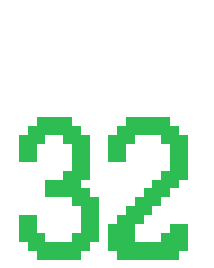

Jenny's 100000<sup>th</sup> Birthday!
Jenny's 100000th Birthday!
Saturday 15th July, 18:00
Dear friends, acquaitances and enemies (you know who you are),
I would like to invite you to my 32nd birthday extravaganza!
I didn't feel up to a big celebration for my 30th birthday two years ago, so here we are on a more interesting number!
We will be doing a bottle share. Which is essentially you bringing a big-ish bottle (or two) of your favourite beverage(s) and receiving a small glass on arrival. The idea is to share and partake in everybody's favourite drinks! Traditionally this is done with beer, but feel free to dabble in other favourite tipples! For those who don't wish to share in alcoholic beverages, we have a fine selection of teas and coffee to enjoy, and of course there'll be snacks!
Please RSVP here for yourself and any plus ones so I can collect sufficient snackage :)
We might play games, or be outside depending on the mood and weather.
If you don't know where I live, please see figures 1 below.
Lots of love,
Jenny
PS, Our exciteable dog (Jacky) will be attending.

Figure 1: The house (Uglahaugstien 19B) is highlighted in green. The roads highlighted are: Uglahaugstien (orange), Uglavegen (pink) and Nordahl Griegs veg (blue).
If you're coming from the Ugla bus or tram stops, the best route is to come via Uglavegen and come through the back garden. There's a little car park for the Caos Kulturhus that you can walk through and there are some stairs down to our back decking. You can bang loudly on the back door or just come on in and yell.
If you're coming from the bottom of the hill up Uglahaugstien, walk up the steps on the right of the garage and follow the path around the side of the building and ring the doorbell.
Jenny made this!